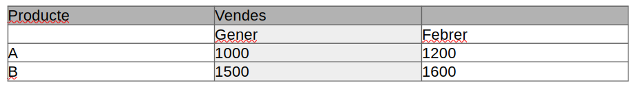

3.6. Combinar Cel·les
Combinació de Cel·les en Taules
A LibreOffice Writer, la combinació de cel·les permet unificar dues o més cel·les adjacents en una de sola. Aquesta funcionalitat és útil per millorar la presentació de les dades i adaptar l'estructura de la taula a les necessitats del contingut, com ara crear capçaleres que abastin diverses columnes o agrupar informació relacionada.
Quan utilitzar la combinació de cel·les
Combinar cel·les és especialment útil en els següents casos:
- Capçaleres complexes: Quan voleu crear una capçalera de taula que cobreixi diverses columnes.
- Agrupació de dades: Per representar visualment que diverses files o columnes contenen informació relacionada.
- Estètica de la taula: Per simplificar la visualització d'informació en taules grans o complexes.
Pas a pas: Com combinar cel·les
Seguiu aquests passos per combinar cel·les en una taula de LibreOffice Writer:
- Seleccionar les cel·les: Primer, seleccioneu les cel·les que voleu combinar. Aquestes cel·les han d'estar adjacents, ja sigui en files o columnes.
Exemple: Si voleu combinar dues cel·les de la primera fila d'una taula de tres columnes, seleccioneu les dues primeres cel·les de la fila.
-
Anar al menú Taula: Un cop seleccionades les cel·les, aneu al menú superior i seleccioneu Taula > Combina cel·les.
-
Cel·les combinades: Les cel·les seleccionades es combinaran en una única cel·la més gran. El contingut de totes les cel·les es fusionarà en una de sola.
Exemple pràctic: Crear una capçalera de taula combinada
Suposem que teniu la següent taula amb informació sobre vendes, i voleu combinar les cel·les de la primera fila per crear una capçalera més clara.
Abans de combinar:

Després de combinar la primera fila:

Dividir cel·les combinades
Si voleu dividir cel·les que prèviament heu combinat, seguiu aquests passos:
- Seleccionar la cel·la combinada: Feu clic a la cel·la que voleu dividir.
- Anar al menú Taula: Aneu a Taula > Divideix cel·les.
- Configurar la divisió: Especifica com voleu dividir la cel·la (en files o columnes) i el nombre de parts.
- Finalitzar: Feu clic a D'acord i la cel·la es dividirà en tantes parts com heu especificat.
Avantatges de combinar cel·les
- Millor presentació visual: Permet crear dissenys de taula més flexibles i adaptats a les dades.
- Capçaleres més clares: Facilita la creació de capçaleres que agrupen diverses categories d'informació.
- Flexibilitat: Podeu modificar la taula en qualsevol moment, combinant i dividint cel·les segons les necessitats del document.
La combinació de cel·les és una eina molt útil a LibreOffice Writer per gestionar taules complexes i millorar la comprensió visual de les dades.